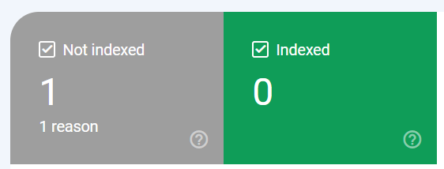

Week 45 - November 22
Monday 11/7
freshly back from vacations (2 weeks) without touching anything AI-computer related
Wednesday 11/9
blog and broken links
Last time I had to fix broken links on this blog. For that I have setup google search console.
But for the moment I have this report

Have to figure out why.
And sitemap as well is not configured. Maybe quarto can help to generate one.
mamba v1.0
Mamba released v1.0.
I can now update my environments:
(base) $ conda update -c conda-forge mamba
Thursday 11/10
[fixed] unsafe legacy renegotiation disabled
Unfortuantely having updated mamba broke my WSL system. My other environment (with same update) is fine.
I think this is linked to openssl version (v3 on WSL, v1.1.1 on linux)
Here are some more information about this problem
$ conda create -n fastai python=3.9
Looking for: ['python=3.9']
Download error (35) SSL connect error [https://repo.anaconda.com/pkgs/r/noarch/repodata.json]
error:0A000152:SSL routines::unsafe legacy renegotiation disabledand information about the environment
# openssl version
$ openssl version
OpenSSL 3.0.7 1 Nov 2022 (Library: OpenSSL 3.0.7 1 Nov 2022)
# ubuntu version (using lsb-release)
$ . /etc/lsb-release && echo $DISTRIB_RELEASE
22.04
# SSL declarations that could impact this behaviour
$ declare -p|grep -i ssl
declare -x CURL_CA_BUNDLE="/etc/ssl/certs/ca-certificates.crt"
declare -x REQUESTS_CA_BUNDLE="/etc/ssl/certs/ca-certificates.crt"
declare -x SSL_CERT_FILE="/home/guillaume/miniconda/lib/python3.9/site-packages/certifi/cacert.pem"Initially I thought of this issue as fixed in WSL installation (setup_wsl_user.sh / “3. update certificates”).
But the workaround/fix is still active
$ cat /etc/ssl/openssl.cnf|grep -i unsafe
Options = UnsafeLegacyRenegotiation[FIX]
Just had to export OPENSSL_CONF
export OPENSSL_CONF=/etc/ssl/openssl.cnfModifying .bashrc to integrated thie environment variable.
fastai course lesson 4 - nlp
Start of lesson 4
Week 46 - November 22
Monday 11/14
fastai course lesson 4 - nlp, lesson 5 - from-scratch model
Ending lesson 4
Starting lesson 5
Wednesday 11/16
quarto update
quarto has been updated to version 1.2.269 as mentioned in fastai forum
Here the procedure to update.
Week 48 - November 22
Monday 11/28
fastai course lesson 5 - from-scratch model
Ending lesson 5
Tip: pd.options.display.float_format = '{:.2f}'.format will display all floats from dataframes with 2 digits
Tip2: from fastai.imports import * will import everuthing that we need (numpy, pandas, matplotlib, …)
fastai course lesson 6 - Random forests
Running through lesson 6
Wednesday 11/30
fastai course lesson 7 - Collaborative filtering
Starting lesson 7